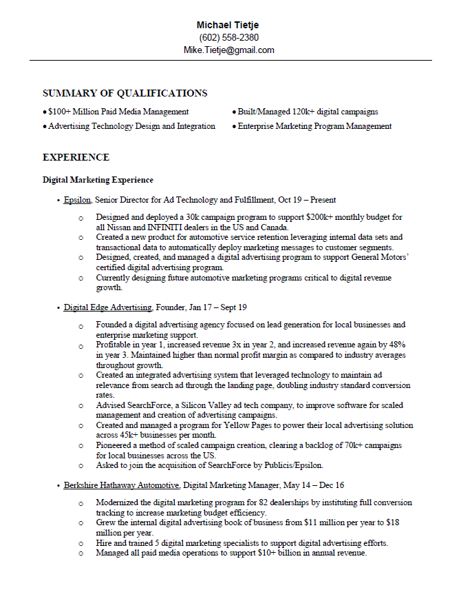

Michael Tietje - Professional Experience
Download my resume Below by clicking the image below
Senior Director - Campaign Operations
Epsilon
- Designed and deployed a 30k campaign program to support 6 figure monthly budget for all Nissan and INFINITI dealers in the US and Canada.
- Created a new product for automotive service retention leveraging internal data sets and transactional data to automatically deploy marketing messages to customer segments.
- Designed, created, and managed a digital advertising program to support General Motors’ certified digital advertising program.
- Currently designing future automotive marketing programs critical to digital revenue growth.
Founder
Digital Edge Advertising
- Founded a digital advertising agency focused on lead generation for local businesses and enterprise marketing support.
- Profitable in year 1, increased revenue 3x in year 2, and increased revenue again by 48% in year 3. Maintained higher than normal profit margin as compared to industry averages throughout growth.
- Created an integrated advertising system that leveraged technology to maintain ad relevance from search ad through the landing page, doubling industry standard conversion rates.
- Advised SearchForce, a Silicon Valley ad tech company, to improve software for scaled management and creation of advertising campaigns.
- Created and managed a program for Yellow Pages to power their local advertising solution across 45k+ businesses per month.
- Pioneered a method of scaled campaign creation, clearing a backlog of 70k+ campaigns for local businesses across the US.
- Asked to join the acquisition of SearchForce by Publicis/Epsilon.
Digital Marketing Manager
Berkshire Hathaway Automotive
- Modernized the digital marketing program for 82 dealerships by instituting full conversion tracking to increase marketing budget efficiency.
- Grew the internal digital advertising book of business from $11 million per year to $18 million per year.
- Hire and trained 5 digital marketing specialists to support digital advertising efforts.
- Managed all paid media operations to support $10+ billion in annual revenue.
US Marine
United States Marine Corps
- Managed all preparatory training of 15-20 intelligence community applicants per class.
- Primary instructor for all applicants on Marine Corps Base Camp Lejeune, NC.
- Conducted 80+ intelligence and security interviews, ensuring safety of information and of 150+ personnel.
- Coordinated all training for more than 200+ human intelligence professionals, including 37 training events, 23 professional military education classes, and multiple intelligence schools, greatly increasing operational readiness.
- Analyzed current policy and advised senior management on development and implementation for successful training of 200+ human intelligence personnel.
- Planned and initiated a $15,000+ project to add 5 classified secure internet routers in office spaces, resulting in a more efficient workflow and a higher level of accessibility for senior management.
- Assisted in managing over 5 million dollars in project funds, assuming all project responsibilities during primary project manager’s month long absence.
- Assisted planning and tracking of 139 projects worth 1.2 million dollars and oversaw the continuing execution of 427 projects worth over 4 million dollars, including funds and milestone management.